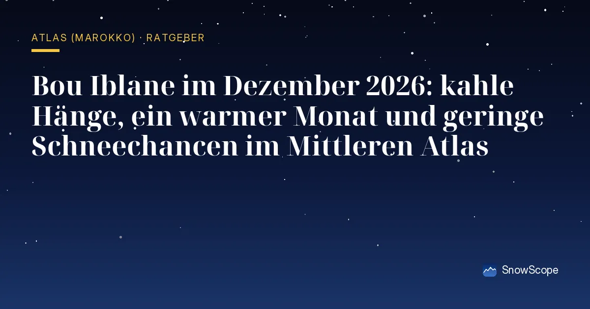
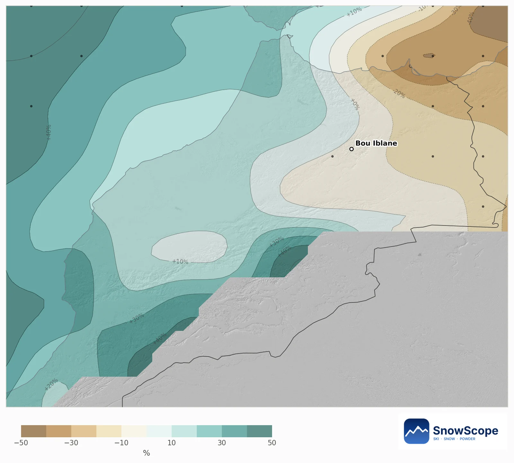

Bou Iblane im Dezember 2026: kahle Hänge, ein warmer Monat und geringe Schneechancen im Mittleren Atlas
Bou Iblane zeigt am 10. November keinen Schnee auf seinem Hochgrat oder den umliegenden Gipfeln des östlichen Mittleren Atlas. Die Dezemberprognose ist entschieden warm und senkt die Schneechancen: dort, wo diese Berge normalerweise Winterschnee fangen, liegt die Wahrscheinlichkeit für überdurchschnittlich viel Schnee dieses Jahr nur bei 30 bis 39 Prozent.
Die Live-Schneeprognose für Bou Iblane in der SnowScope-AppSchneehöhen, Pulverschnee-Alarme und 3D-Karte, gratis.

Das kahle Massiv heute
Wer das Hochland rund um Bou Iblane durchwandert, findet blanken Fels und Geröll. Die SnowScope-Karte vom 10. November zeigt innerhalb von 60 km um den Gipfel auf 2700 m kein Weiß. Wir zeigen dir stattdessen das Gelände: den langen Bou-Iblane-Grat selbst und östlich davon das separate Massiv des Bou Naceur. Das sind die Gipfel, wo der Winterschnee zuerst Fuß fasst, wenn die Saison dreht.
Im November ist der Mittlere Atlas noch warm und trocken. Die 13 Bergrasterzellen der Region deuten alle auf weniger Schnee als in bisherigen Dezembern, und keine zeigt ein Signal für mehr. Diese Tendenz wird von Wärme angetrieben, nicht von trockener Luft.
Was ein typischer Dezember bringt
Hoch auf Bou Iblane in der Nähe von 2700 m bringt ein durchschnittlicher Dezember 23 cm Neuschnee. Bis zum 31. Dezember liegen nur noch 5 cm am Boden. Sonne und die warmen Phasen zwischen den Stürmen schmelzen das meiste weg. Das sind trockene Berge, wo sich Schnee nur ansammelt, wenn Kälte anhält oder frischer Schnee täglich kommt.
Die Spanne von schneearmen bis zu schneereicheren Dezembern in der Vergangenheit ist groß: ein Viertel der früheren Winter endete komplett schneefrei, während ein Viertel 11 cm oder mehr hatte. Die Aussicht dieses Jahr verengt diese Spanne nach unten. Die Chancen, dass der Dezember tiefer als die typischen 5 cm endet, stehen nur bei 30 Prozent.

Wärme ist der Haupttreiber
Die 51 Vorhersagen des Europäischen Wetterzentrums sind sich bei einem Punkt einig: Der Dezember wird warm. Sechsundneunzig Prozent von ihnen sagen überdurchschnittliche Temperaturen voraus, mit einer durchschnittlichen Erwärmung von 2,3 Grad Celsius im Mittleren Atlas. Eine solch breite Einigkeit über Wärme ist selten.
Bei Niederschlägen spalten sich die Prognosen: 41 Prozent sagen mehr Niederschlag als üblich, 59 Prozent weniger. Im Durchschnitt sagen sie 2 Prozent mehr Regen und Schnee als ein typischer Dezember mit 42 mm voraus, ein kleiner Überschuss. Aber in diesen Bergen zählt die Temperatur mehr als der Gesamtniederschlag. Schnee reagiert auf beides: Er folgt dem Niederschlag eng (Korrelation 0,86), aber Wärme treibt Schnee weg (Korrelation –0,38). Ein paar Grad zusätzliche Wärme verwandeln fallenden Schnee in Regen in tieferen Lagen und beschleunigen das Schmelzen in höheren.


Welche bisherigen Dezember passen zu diesem Muster
Keiner lieferte bis Monatsende eine gute Schneedecke.
Doch die Geschichte zeigt auch einen Ausweg: Ein einzelner kräftiger Atlantiksturm kann das Bild innerhalb von Tagen umkehren. Wenn kalte Luft und organisierte Niederschläge sich ausrichten, werden Bou Iblane und die Nachbargipfel schnell weiß. Solche Stürme sind im Dezember selten, aber nicht unmöglich. Die Monatsausicht ist eine Verschiebung der Wahrscheinlichkeit, nicht in Stein gemeißelt.

Wo du hinschaust, wenn Schnee kommt
Falls der Dezember ein Schneeereignis bringt, fängt der Hochgrat von Bou Iblane ihn zuerst, besonders an nordseitigen Hängen über 2700 m. Diese Aspekte halten Schnee am längsten, weil die Wintersonne niedrig und schwach steht. Südseitige Hänge verlieren ihre Schneedecke schnell, sobald das Auftauen beginnt.
Der Unterschied zwischen einem kahlen Monat und einer schneeigen Überraschung verengt sich oft auf ein bis zwei Wochen im frühen Dezember. Beobachte die 7-Tages-Vorhersage genau. Wenn Meteorologen ein kaltes, nasses System aus dem Nordwesten ankündigen, dann ist es Zeit für deinen Aufstieg. Zwischen solchen Systemen erwarte Schmelze und Rückgang.
Tipps für Skifahrer
- Plane Wanderungen auf Bou Iblane nach der 7-Tages-Vorhersage, nicht nach der Monatsausicht. Wöchentliche Vorhersagen sagen dir, wenn Schnee wirklich fällt.
- Nach jedem Dezembersturm geh auf nordseitige Hänge und Grate über 2700 m, wo Schnee in der starken Wintersonne am längsten hält.
- Schau die SnowScope-Karte an, bevor du aufbrichst. In einem warmen Dezember schmilzt Schnee auf diesen Hochhängen oft innerhalb von drei bis fünf Tagen.
- Bring extra Wasser und Sonnenschutz mit: auch wenn frischer Schnee auf Hochgelände liegt, ist die Dezembersonne auf 2700 m hell und die Luft trocken.
- Wenn du eine Winterdurchquerung des Grats planst, starte früh im Dezember und beobachte täglich die Vorhersagen. Ein warmer, kahler Monat kann über Nacht weiß werden, wenn Atlantikstürme kommen.
Zu diesen Zahlen
Die Schneehöhen der Skigebiete sind der meiste Schnee in den oberen Hängen am angegebenen Tag; es sind Schätzungen für eine Fläche, keine Messung an einem Punkt. Prognosen können sich ändern. Lies vor dem Freeriden immer den offiziellen Lawinenlagebericht.
Diesen Bericht zitieren
Für Forschung, Lehre oder Presse: Zahlen und Grafiken sind unter CC BY 4.0 mit dieser Quellenangabe frei nutzbar.
SnowScope (2026), Bou Iblane im Dezember 2026: kahle Hänge, ein warmer Monat und geringe Schneechancen im Mittleren Atlas, https://snowscope.app/blog/de/2026/11/bou-iblane-december-2026-snow-outlook.html, abgerufen am 2026-11-10
SnowScope (Atlas Labs). (2026, November 10). Bou Iblane im Dezember 2026: kahle Hänge, ein warmer Monat und geringe Schneechancen im Mittleren Atlas. SnowScope snow reports. https://snowscope.app/blog/de/2026/11/bou-iblane-december-2026-snow-outlook.html
BibTeX
@misc{snowscope2026bouiblanedecember2026sno,
author = {{SnowScope (Atlas Labs)}},
title = {Bou Iblane im Dezember 2026: kahle Hänge, ein warmer Monat und geringe Schneechancen im Mittleren Atlas},
year = {2026},
month = nov,
howpublished = {\url{https://snowscope.app/blog/de/2026/11/bou-iblane-december-2026-snow-outlook.html}},
note = {Published 2026-11-10 10:48 UTC; accessed 2026-11-10}
}· CC BY 4.0 · Methoden, Daten und Werkzeuge →
Bou Iblane folgen
Gratis: eine Nachricht, wenn Neuschnee kommt, und jeden Morgen die Vorhersage.